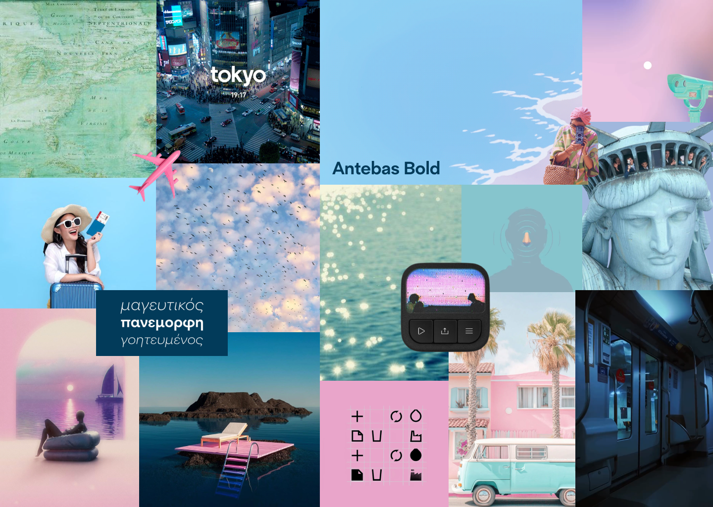
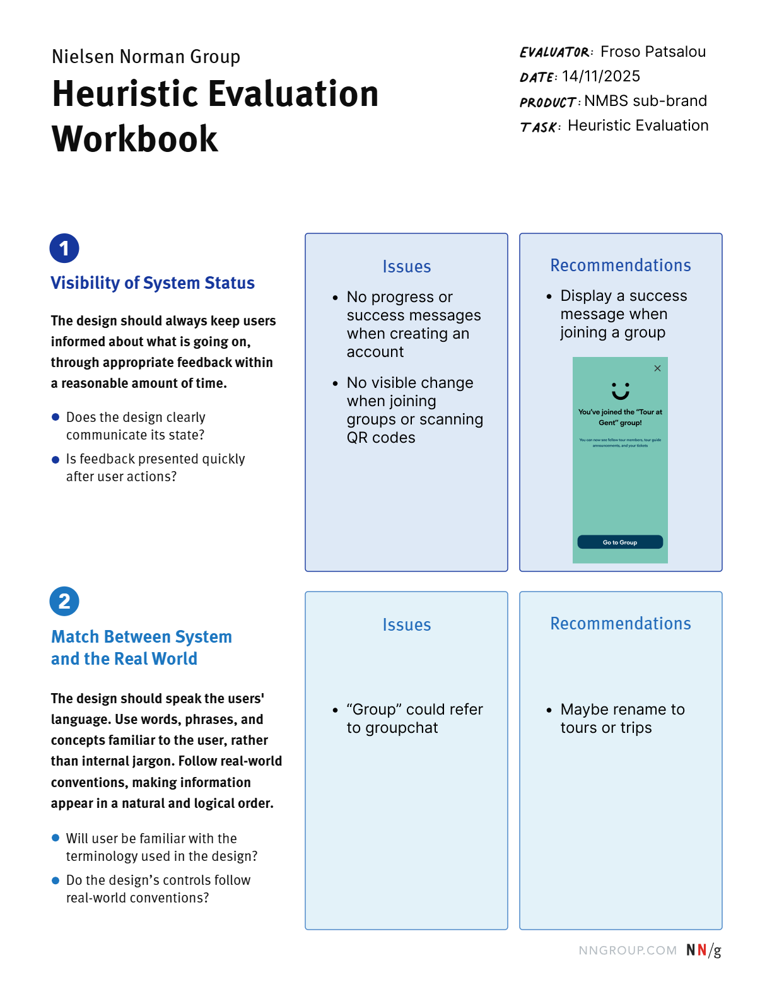

The tour guide
Buy tickets for the Brussels trip tour.
Tour guide screensFinal phone mockups to be added
- Group overview
- Trip planner
- Purchase confirmation
Reimagining an existing railway app through a group travel perspective.
Explore the rebrand ↓SNCB already has an app. This project explores rebranding it, changing the design and adding or reframing features. The supplied high fidelity file focuses on two group travel flows, one for a tour guide and one for a tourist.
The full brief, individual responsibilities, timing and constraints will be added here.
The moodboard sets out three words for the intended style, pastel, relaxing and soft. It also references Antebas Bold.

Brand rationale, palette and typography specifications will be added in this space.
The two tasks below come directly from the high fidelity design file.
Buy tickets for the Brussels trip tour.
View tickets for the trip to Brussels and add the journey to the lock screen.
The evaluation document records interface issues and proposed improvements to the redesign. This section makes room for that reasoning.
The notes call for visible progress and success messages, including confirmation after joining a group.
Suggested changes include leaving groups, exiting announcements, marking required fields and keeping the chosen date and time visible.
The evaluation raises colour consistency, contrast, error feedback and clearer onboarding instructions.

Further evaluation pages and the selected screen comparisons can be placed here as the case study is filled in.
Read the evaluation ↗The design file separates the original flows from versions labelled after heuristic evaluation.
A focused explanation of each selected revision will go here, alongside its original screen.
These previews show the existing Figma work, ready to inspect in a larger view.


Project outcomes, personal learnings and next steps will be added here.
Reflection placeholder.
Next steps placeholder.